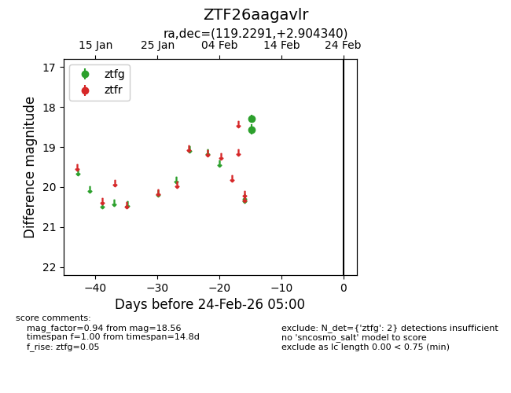
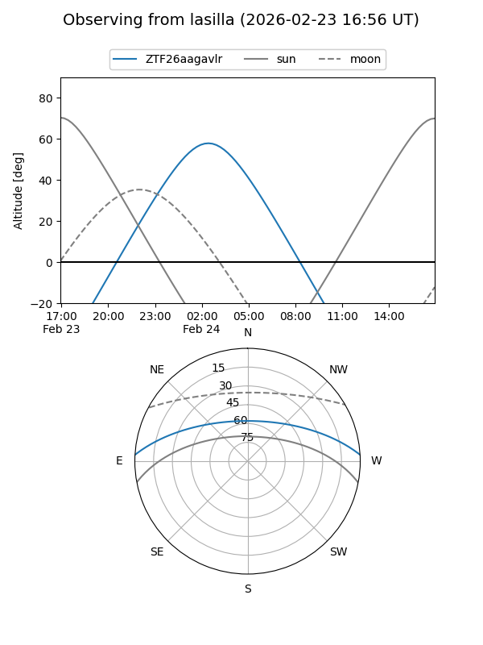
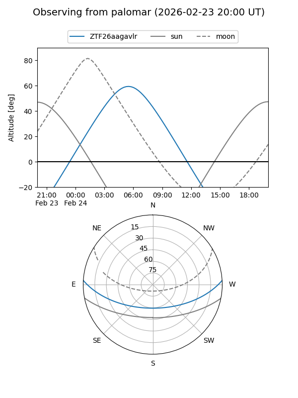

ZTF26aagavlr
Target ZTF26aagavlr at 2026-02-24 09:08
Aliases and brokers:
FINK: link
Lasair: link
ALeRCE: link
alt names
ZTF26aagavlr (ztf,fink_ztf)
Coordinates:
equatorial (ra, dec) = 119.2291,+2.90434
equatorial (HMS+DMS) = 07:56:54.98,+02:54:15.62
galactic (l, b) = (217.8973,+15.87918)
Flags:
Photometry:
last ztfg=18.56
2 ztfg detections
Lightcurve

Visibility


Additional plots